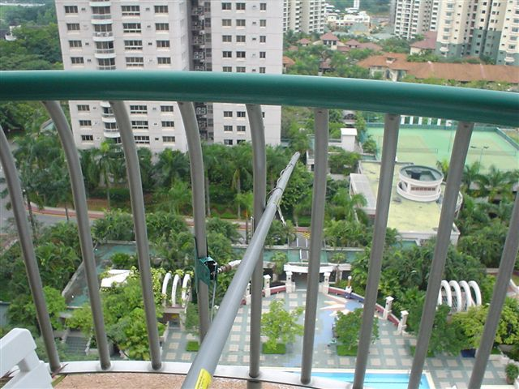
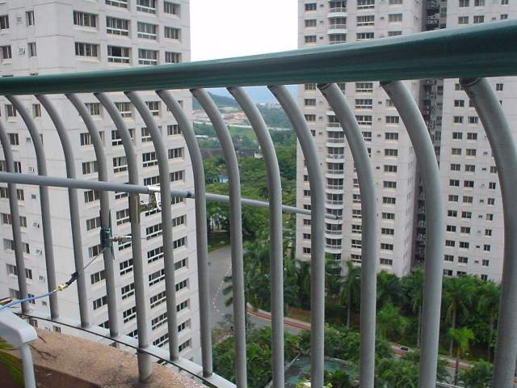

[Back Issues Oct.2003]
TIME:UTC(JST-09:00)
Report from JA1RJU (PM95sq)
31.Oct.2003(16:00e)
*BY-TV 01:00- 49.750 --
V73SIX/B 01:30- 50.014 CW Beacon
DU1EV/B 01:30- 50.008 CW Beacon
*9M-TV 03:30- 48.240/260 --
V73SIX/B 06:50- 50.014 CW Beacon
9M2TO 08:05 50.116 CW/SSB
*??-TV 14:00- 48.251 --
*VK-TV 14:00- 46.172 --
VK6RSX 14:00- 50.304 CW Beacon
N7ET/DU7 14:00 50.110 CW
DU1BP 14:37 50.145 SSB strong!
VR2XMT 14:42 50.110 SSB
DU1BP 15:00 50.145 SSB strong!
VR2XMT 15:00 50.110 SSB
DU1EV 15:05 50.110 CW
BA7IA 15:15 50.110 CW
VK8RAS 15:35- 50.0467 CW Beacon
VK6RSX 15:35- 50.304 CW Beacon
30.Oct.2003(15:00c)
*9M-TV 01:30- 48.240/260 --
*BY-TV 05:00- 49.750 --
22-29.Oct.2003(00:00a-15:00a)
◎10/22日-10/29日の"Flash ! DX"の入感リポート(6m Today !)は休止します。
21.Oct.2003(15:00e)
*BY-TV 01:00- 49.750 --
*ZL-TV 01:20- 45.24/25/26-- strong!
*VK-TV 02:00- 46.172/240 --
V73SIX/B 02:58- 50.014 CW Beacon
DU1EV/B 04:40- 50.008 CW Beacon
VK8RAS 04:40- 50.0467 CW Beacon
FK8SIX/B 05:10- 50.0795 CW Beacon
VK4NW 05:24 50.110 SSB
VK4APG 05:27 50.110 SSB
VK3DUT 05:30 50.110 SSB
FK8GX 05:34 50.110 SSB QSO with KH6SX
V73SIX/B 05:40- 50.014 CW Beacon
VK8RAS 05:40- 50.0467 CW Beacon
VK6RSX 06:00- 50.304 CW Beacon
VK4RTL 06:00- 50.087 CW Beacon
VK4APG 06:01 50.110 CW/SSB
KG6DX 06:10 50.120 CW
XV3AA 06:15 50.130 SSB
VK4AHW 06:20 50.110 SSB
VK4ABW 06:25 50.110 SSB
N7ET/DU7 06:27 50.110 CW
VK4ABP 06:30- 52.3467 CW Beacon
20.Oct.2003(15:00e)
*VK-TV 02:00- 46.172/240 --
V73SIX/B 02:30- 50.014 CW Beacon
VK4RGG 03:00- 50.058 CW Beacon
*9M-TV 03:00- 48.24/25/26 --
VK4AHW 03:08 50.110 SSB
VK4BLK 03:10 50.130 SSB
VK2HO 03:11 50.110/130 SSB
VK4ABP 03:15- 52.3467 CW Beacon
VK4YRS 03:15 50.110 SSB
VK4JH 03:15 50.110 SSB
VK4AHW 03:17 50.110 SSB
VK8RAS 03:18- 50.0467 CW Beacon
VK4CXQ 03:20 50.110 CW
VK4JSR 03:27 50.110/145 SSB
VK4NW 03:29 50.110 SSB
FK8SIX/B 03:30- 50.0795 CW Beacon
KH6SX 03:40 50.110 CW SC
VK4CXQ 03:48 50.110/105 CW
VK4APG 03:51 50.110 SSB
DS1CCU 03:54 50.110 CW
DU1EV/B 03:54- 50.008 CW Beacon
FK8EB 04:07 50.106 CW
DU1EV/B 07:00- 50.008 CW Beacon strong!
N7ET/DU7 07:07 50.115 SSB
VK6RSX 07:50- 50.304 CW Beacon
VI8NT 08:27 50.110/130 SSB (QSL via VK6NE)
VK6RSX 09:50- 50.304 CW Beacon
*VK-TV 09:50- 46.172/240 --
19.Oct.2003(15:00d)
*VK-TV 02:30- 46.172 --
*9M-TV 02:30- 48.240/260 --
V73SIX/B 03:20- 50.014 CW Beacon
VI8NT 04:54 50.110/130 SSB
VK4ABW 05:12 50.110 CW
VK4CXQ 05:12 50.110 CW
VK6RSX 07:48- 50.304 CW Beacon
VK6JQ 09:02 50.110 CW
VK4ABW 09:32 50.110 CW/SSB
18.Oct.2003(15:00d)
*ZL-TV 00:00- 45.24/25/26--
*VK-TV 01:30- 46.172 --
KH2VL/KH0 03:30 50.120 CW
V73SIX/B 04:00- 50.014 CW Beacon
FK8SIX/B 04:00- 50.0795 CW Beacon
V73GOD 04:53 50.110 SSB
*9M-TV 05:00- 48.240/260 --
XU7ACG 05:58 50.110/125 SSB
DU1EV/B 06:40- 50.008 CW Beacon
XU7ACG 06:40 50.110 SSB
YC1MH 07:24 50.110/145 SSB
YC1BYO 07:28 50.145 SSB
YC1MH 07:37 50.110 SSB
VK6RSX 08:20- 50.304 CW Beacon
VK6JJJ 10:03 50.110 SSB CQ
17.Oct.2003(15:00e)
*VK-TV 03:00- 46.240 --
V73SIX/B 03:10- 50.014 CW Beacon
VK8RAS 03:34- 50.0467 CW Beacon
VK2ZXC 03:50 50.110 SSB
VK6RPH 04:40- 50.066 CW Beacon
FK8SIX/B 04:20- 50.0795 CW Beacon
FK8GX 04:50 50.125 SSB
VK8RAS 05:20- 50.0467 CW Beacon
*9M-TV 05:20- 48.240/260 --
XU7ACG 06:15 50.110/121 SSB
3W22S 07:30 50.110 SSB/CW
VK6RSX 08:20- 50.304 CW Beacon
VK3DUT 08:37 50.110/130 SSB strong!
VK6JQ 08:40 50.112 CW
VK8ZAA 08:50 50.110/130 SSB
VK4CXQ 08:58 50.110 SSB
C21SIX 09:00- 50.038 CW Beacon
VK8RAS 09:00- 50.0467 CW Beacon
FK8SIX/B 09:00- 50.0795 CW Beacon
VK3DUT 09:42 50.110 SSB
VK3DUT 09:50 50.110/150 SSB
VK3ZC 09:58 50.130 SSB
VK3AZY 10:00 50.130 SSB
VK3GJW 10:01 50.130 SSB
VK3XQ 10:03 50.130 SSB
VK5AIM 10:06 50.130 SSB
VK3AUI 10:11 50.124 SSB
(ZL's 23:04-40 50.110 CW ZL3SIX/b.ZL3TY.ZL3NW)
16.Oct.2003(15:00e)
*BY-TV 00:00- 49.750 --
*ZL-TV 01:20- 45.24/25/26-- strong!
*VK-TV 02:10- 46.172/240 -- strong!
FK8SIX/B 02:10- 50.0795 CW Beacon strong!
VK4NW 03:04 50.110 SSB
VK2ZXC 03:05 50.110 CW
VK2DN 03:10 50.110 CW
VK4RGG 03:10- 50.058 CW Beacon
ZL1VHF 03:16 50.0433 CW
VK8RAS 03:30- 50.0467 CW Beacon
FK8EB 03:36 50.110 CW
V73SIX/B 03:45- 50.014 CW Beacon
FK8HA 03:55 50.130 SSB
FK8GX 03:56 50.125 SSB
VK4ZHN 04:01 50.110/145 SSB
VK4ZSS 04:25 50.110 SSB
FK8SIX/B 04:30- 50.0795 CW Beacon strong!
VK4RGG 04:30- 50.058 CW Beacon
VK4UMA 04:30 50.110/120 SSB
VK4CXQ 04:35 50.110 CW
VK4AML 04:35 50.110/160 SSB
VK4AHW 04:38 50.125 SSB
FK8GX 04:52 50.110 CW
VK4TZL 05:02 50.110 SSB
VK4ZAA 05:04 50.125 SSB
VK4YRS 05:07 50.110/120 SSB
VK2HO 05:10 50.110 SSB
VK4CXQ 05:10 50.110 CW
VK2DN 05:24 50.110 CW
VK4ZSS 05:41 50.110 SSB
VK4CP 05:41 50.110 SSB
VK4APG 05:54 50.110 SSB
VK4ADJ 06:11 50.110 SSB
VK4RGG 06:15- 50.058 CW Beacon
C21SIX 06:15- 50.0383 CW Beacon
*ZL-TV 06:30- 50.750 FM TV Audio
KG6DX 07:05 50.110 CW
DU1EV/B 07:15- 50.008 CW Beacon
DU1BP 07:15 50.110 SSB
KG6DX 07:30 50.091 RTTY
HL1LTC 09:06 50.110 CW/SSB CQ
*VK-TV 12:30- 46.172/240 --
◎ 午前中に珍しく45MHz帯のZL-TVが入感。
同時刻にJA2以西から47.900MHzのCE-Musicの入感がクラスターにリポートされたが、
JA1(PM95sq)ではキャリアは確認されたものの"Music"は聞こえなかった。
正午頃から南太平洋方面がFBにオープン。
FK8's、VK2,4'sが長時間に渡り強力に入感、久しぶりにZL1VHFのBeaconも入感していた。
|
15.Oct.2003(15:00c)
DU1EV/B 01:00- 50.008 CW Beacon
*VK-TV 01:00- 46.172 --
VI8NT 01:13 50.110/130 SSB
*VK-TV 02:45- 46.240 --
VK8MS 13:15 50.110 SSB
14.Oct.2003(15:00d)
*VK-TV 03:00- 46.172/240 --
V73SIX/B 04:30- 50.0142 CW Beacon
VK8RAS 04:30- 50.0467 CW Beacon
XV3AA 07:44 50.130 SSB
YC1MH 08:18 50.110 SSB
VK4FNQ 09:48 50.110/130 SSB
VK8MS 09:52 50.110 SSB/CW
13.Oct.2003(15:00c)
*VK-TV 03:00- 46.172/240 --
VK8RAS 04:20- 50.0467 CW Beacon
*9M-TV 06:00- 48.24/25/26--
12.Oct.2003(15:00d)
*VK-TV 03:00- 46.172 --
*9M-TV 06:00- 48.240/260 --
YB1BGI 05:35 50.120 SSB
YB1BGI 06:30 50.120 SSB
N7ET/DU7 06:39 50.110 CW CQ
YC1MH 07:15 50.110/120 SSB strong!
YB0DPO 07:23 50.110 CW up
YB1BGI 07:35 50.150 SSB
YB0DPO 07:42 50.110 SSB
(9M2/JR1WZI 07:43 50.105 CW JA2-6.9.0)
YC0OK 07:50 50.130 SSB
◎ 午後から東南アジア方面のコンデションが上昇、JA1エリアではYB/YCが強力に入感していた。
JA2エリア以西でQSOしていた9M2/JR1WZIは残念ながら1エリア(PM95)では確認出来なかった。
JR1WZI・荒井さんは7月から仕事でマレーシアの首都・クアラルンプールに滞在していて、
9月下旬に免許を受け、今日の6mのオープンが初のJAとのQSOとなった。
今日のJA'sとのQSOは07:39-08:06zに22局(JA2.3.4.5.6.9.0)。
RIGはIC-706MK2G(50W)と自宅のコンドミニアムのベランダ手すりに取り付けたダイポールでの運用だった。
|


塩ビパイプに1.5mのビニール線を這わした6mアンテナ(TNX 9M2/JR1WZI)
11.Oct.2003(15:00d)
*VK-TV 03:00- 46.172 --
*VK-TV 03:50- 46.172/240 --
VK8RAS 03:50- 50.0467 CW Beacon strong!
DU1EV/B 06:10- 50.008 CW Beacon
YC1MH 06:20 50.110/120 SSB
YB0DPO 06:40 50.125 CW up1(07:18z QRT)
*9M-TV 07:00- 48.240/260 --
10.Oct.2003(15:00d)
*VK-TV 01:30- 46.172/240 --
FK8SIX/B 02:40- 50.0795 CW Beacon strong!
VK4RGG 02:50- 50.058 CW Beacon
*9M-TV 03:50- 48.240/260 --
VK4NW 03:58 50.110 SSB
VK8RAS 04:00- 50.0467 CW Beacon
VK4RGG 04:00- 50.058 CW Beacon
VK4ABP 04:00- 52.3468 CW Beacon
DU1EV/B 04:34- 50.008 CW Beacon
VK6RSX 05:20- 50.304 CW Beacon strong!
*BY-TV 05:30- 48.747.5 --
3W22S 06:56 50.110/105 CW SPECIAL EVENT CALLSIGN (22th South East Asian Games)
3W22S 07:13 50.105(up) SSB QSL Direct only. Please add $2 or 2IRC's+SAE
DU1EV/B 07:30- 50.008 CW Beacon strong!
3W22S 07:30 50.105 CW/SSB up10
DU1BP 07:40 50.130 SSB
3W22S 07:57 50.105 AM up10
VK6RSX 08:35- 50.304 CW Beacon
N7ET/DU7 11:40 50.110/120 CW/SSB
09.Oct.2003(15:00d)
*VK-TV 01:30- 46.172 --
*VK-TV 02:30- 46.172/240 -- strong!
FK8SIX/B 03:15- 50.0794 CW Beacon
*9M-TV 04:00- 48.240/260 --
*BY-TV 04:00- 48.747.5 --
VK8RAS 04:40- 50.0467 CW Beacon
VK6RPH 05:10- 50.066 CW Beacon
VK6RSX 05:45- 50.304 CW Beacon
|
◎ MyanmarからアクティブにQRVしていたXZ7Aは、10/8日に一時QRTして海辺の新しい運用場所に移動した。
既に9日朝には6mのアンテナも上がりオープンに備えていると。8日までの6mのQSO数は805(SSB=384、CW=421)。
Pratas I.のBQ9PもQRVを始めた。
|
08.Oct.2003(15:00e)
*VK-TV 01:30- 46.172 --
VK6RSX 06:30- 50.304 CW Beacon
VK6RSX 08:30- 50.304 CW Beacon
VK6JQ 08:35 50.110 CW CQ
VK6JQ 09:05 50.110 CW CQ CQ!
VK6JQ 09:28 50.110 SSB QSO with A61AH!
FK8SIX/B 09:35- 50.0795 CW Beacon
VK6JQ 09:44 50.110/115 CW/SSB QSO with HZ1MD!
VK8RAS 10:00- 50.0467 CW Beacon
VK6RSX 10:00- 50.304 CW Beacon
VK6RSX 12:00- 50.304 CW Beacon
VK4FNQ 12:15 50.110/130 SSB
VK4CXQ 12:33 50.110 SSB/CW
YC1EHR 12:44 50.110 SSB
YB1BGI 12:49 50.110 SSB
YC1BYO 12:52 50.110 SSB
VK4CXQ 12:57 50.110 CW
07.Oct.2003(15:00d)
*VK-TV 03:00- 46.172 --
VK8RAS 05:05- 50.0467 CW Beacon
VK6RSX 06:33- 50.304 CW Beacon
VK6RSX 08:00- 50.304 CW Beacon
VK6JQ 09:49 50.110 CW CQ
VK8RAS 10:00- 50.0467 CW Beacon
VK6RSX 10:00- 50.304 CW Beacon
N7ET/DU7 12:58 50.110 CW
VK6RSX 13:00- 50.304 CW Beacon
06.Oct.2003(15:00d)
*VK-TV 03:00- 46.172 --
VK6RSX 08:35- 50.304 CW Beacon
VK6RSX 09:40- 50.304 CW Beacon
VK6JQ 09:43 50.110 CW CQ
DU1EV/B 12:00- 50.008 CW Beacon
VK8RAS 12:00- 50.0467 CW Beacon
VK6RSX 12:00- 50.304 CW Beacon
VK4ABW 12:23 50.110 SSB
VK8MS 12:28 50.110 SSB
VK4ABW 12:45 50.110 SSB
YC1MH 12:59 50.110 SSB
05.Oct.2003(15:00e)
*VK-TV 02:20- 46.172 --
VK4CXQ 03:56 50.110 CW
VK4TZL 03:58 50.110/130 SSB
VK4ABP 04:00- 52.347 CW Beacon
VK4PU 04:03 50.110 SSB
VK4WDM 04:08 50.110/130 SSB
VK4WDM 04:50 50.110 SSB
VK4JH 05:22 50.110 SSB
VK6RSX 06:20- 50.304 CW Beacon
*9M-TV 07:00- 48.240/260 --
VK6RSX 07:50- 50.304 CW Beacon
XZ7A 08:00 50.115 SSB
XU7ACD 08:01 50.110/123 CW/SSB
VK6RSX 09:55- 50.304 CW Beacon
VK6JJJ 10:05 50.110 SSB CQ
DU1EV/B 11:30- 50.008 CW Beacon
N7ET/DU7 12:50 50.110 CW
VK6RSX 13:15- 50.304 CW Beacon
N7ET/DU7 13:15 50.101 CW
YB0ASG 13:17 50.101 CW QSO with N7ET/DU7
YB0ASG 13:26 50.110 SSB
YC1MH 13:40 50.140 SSB
DU1EV/B 14:00- 50.008 CW Beacon
N7ET/DU7 14:00 50.110 CW
VK6RSX 14:30- 50.304 CW Beacon
04.Oct.2003(15:00e)
*VK-TV 02:30- 46.172 --
*9M-TV 02:30- 48.240/260 --
VK8RAS 03:00- 50.0467 CW Beacon strong!
XZ7A 03:25 50.110 CW
XZ7A 03:33 50.105 CW CQ up1
XZ7A 04:10 50.105 CW still good!
XZ7A 04:35 50.115 SSB up5
VK6RSX 05:10- 50.304 CW Beacon
XZ7A 05:45 50.115 SSB still good!
DU1EV/B 06:15- 50.008 CW Beacon
XZ7A 06:15 50.105 CW back to CW
VK6RSX 08:30- 50.304 CW Beacon
VK6JQ 08:56 50.110 CW CQ
VK6JQ 09:18 50.112/105 CW CQ
|
◎ 昨日まで東日本では入感の芳しくなかったMyanmarのXZ7Aだったが、今日は関東でも強力に入感してきた。
03:25z頃から50.110MHzのCWでCQが聞こえ始めたXZ7Aは、
その後50.105(CW)、50.115(SSB)で07:00z過ぎまでJA'sのパイルをスプリットで捌いていた。
|
03.Oct.2003(15:00e)
*VK-TV 03:30- 46.172 --
*9M-TV 06:00- 48.240/260 --
VK6RSX 06:20- 50.304 CW Beacon
XZ7A 06:55 50.105 CW vy weak into PM95sq
9M2TO/B 07:45- 50.005 CW Beacon FB!
VK6RSX 08:30- 50.304 CW Beacon
VK6JQ 08:38 50.110 CW
VK8RAS 09:00- 50.0467 CW Beacon
FK8SIX/B 09:00- 50.0795 CW Beacon
VK6RSX 09:00- 50.304 CW Beacon strong!
(XU7ACD 09:10 50.110/115 CW JA1-)
VK4CXQ 09:21 50.105 CW
VK4JH 09:32 50.110 CW/SSB
VK6JQ 09:38 50.115 CW
VK4CXQ 09:50 50.105 CW
|
◎ MyanmarのDX-Pedition、XZ7Aが一昨日からJAでも入感しているが、
JA2以西でRST599でQSOしている信号も東日本ではほとんど聞こえてこない。
同時刻にQRVしていたXU7ACD(Cambodia)共々入感しているエリアは地域性のあるオープンだった。
南西方向のパスに対してはやはり"西高東低"のコンデションとなっている。
|
02.Oct.2003(15:00c)
*9M-TV 07:30- 48.24/25/26--
*BY-TV 08:00- 49.750 --
VK6RSX 08:42- 50.304 CW Beacon
VK6RSX 09:40- 50.304 CW Beacon strong!
01.Oct.2003(15:00d)
*VK-TV 02:30- 46.172/240 --
FK8SIX/B 03:10- 50.0794 CW Beacon
FK8HA 03:10 50.110 SSB QSO with FK8EB
FK8EB 03:10 50.110 SSB
FK8GX 03:42 50.110 CW
C21SIX/B 03:45- 50.038 CW Beacon
V73SIX/B 03:50- 50.0142 CW
FK8EB 03:56 50.115 CW
FK8GX 04:13 50.110 CW
VK8RAS 04:30- 50.0467 CW Beacon
VK4CXQ 04:32 50.110 CW
V73SIX/B 05:00- 50.0142 CW
VK6RSX 06:10- 50.304 CW Beacon
VK6RSX 07:20- 50.304 CW Beacon
(XZ7A 08:20 50.105 CW into JA5/6)
VK6RSX 13:10- 50.304 CW Beacon